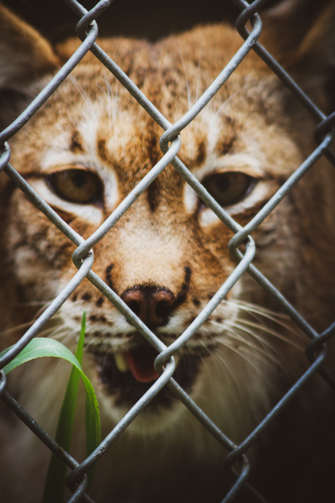

The zoo is a popular place to visit at any age and at any time of
the year. But are zoos helping or harming the animals housed?
Merriam-Webster’s dictionary defines a zoo as “a place where many
kinds of animals are kept so that people can see them.” Zoos educate
people about different kinds of animals, but the rights of the
individual animals housed there are arguable.
It creates lots of buzz and awareness in our society which is vey
musch neccessary, ever so important in current day and age where the
nature is getting farther away from us in its presine condition.
Important things that zoos play an important role in:
Education and awareness
